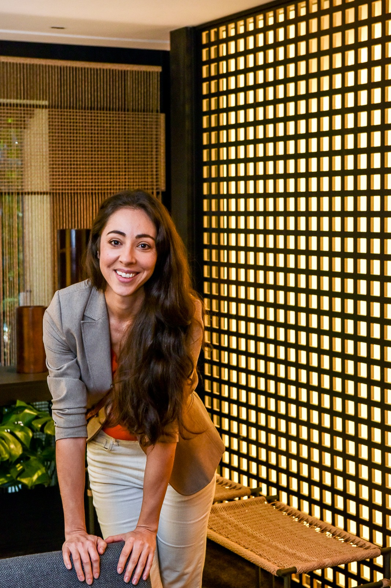

Carla SoaresConstruction Project Management Student | Architectural Design Professional

Welcome to my ePortfolio
Carla Rocha Soares
I am an Architectural Design Professional currently completing a Master of Management (Construction Project Management) at ICL Graduate Business School in Auckland. With over twelve years of experience in residential design, technical documentation and project coordination, I am transitioning into construction project management.
In the short term, my goal is to gain practical experience within New Zealand's residential construction industry. In the long term, I aim to combine my architectural background and management expertise to coordinate and eventually lead sustainable residential construction and redevelopment projects.